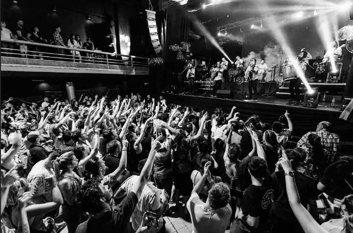

LOS TABALEROS
Los Tabaleros es un grupo porteño folclórico con influencias del punk rock. En sus primeros años se dedicaron a interpretar y a entender el más tradicional folk vernáculo y poco a poco hicieron carne su necesidad real de componer y expresarse. La banda tiene un origen folclórico pero también abrazan todo tipo de estéticas musicales y artísticas, llevan a cabo obras performáticas pasando desde el formato acústicos a teatro a ciegas, como también recitales en la escena del rock nacional con presentaciones en Centro Cultural Recoleta, CC Matienzo, Uniclub, Konex, Niceto, Teatro Caras y Caretas, Café Vinilo, Mastai (Festival en San Pedro para 40 mil personas junto a bandas populares de la escena del rock).
La fusión de estilos les permitió tocar también en la Fiesta Nacional de la Miel en San Vicente ante 30 mil personas acompañados por don Vitillo Abalos y Juan Gigena Abalos, visitando dos veces el programa "Sin Estribos" del Cholo Gomez Castañon, y más. El primer álbum de Los Tabaleros se editó en 2009: "Carmesí". En 2016 sacan su segundo disco: "Lolita". "¡Tuy!", el tercer álbum de Los Tabaleros contó con la dirección de orquesta y producción de Juan Gigena Ábalos. Se grabó en MCL Records, El Gorrión Negro y TUCO Estudio. Fue masterizado por el reconocido ingeniero Daniel Ovie. Michel Peyronel participa en la introducción en francés de "Chiquita". La banda que nunca se queda quieta recorrió un exitoso 2018,donde participó de festivales en el C.C. Konex; el Festival Provincia Emergente, en el Estadio Único de La Plata, y un 2019 cargado de shows propios y potentes. Participaron de festivales en Buenos Aires y Provincia, en grillas populares y eclécticas (Dúo Coplanacu, Mala Fama). Dieron giras al interior del país (Rosario, Córdoba) y también fueron invitados de Los Auténticos Decadentes en el show "Festival Nacional" en Buenos Aires y La Plata, y en el Luna Park, de Las Pastillas del Abuelo. En el 2019 presentaron por todo el país su 4° disco de estudio, "Chuy", donde ambientes lisérgicos dan vida a la fauna exótica de una provincia imaginaria. Cuenta con la co-producción artística Martín "Moska" Lorenzo y Mariano Francescheli (de Los Auténticos Decadentes), y con la participación especial de Diego Tuñon (Babasónicos). Grabado y masterizado en los estudios "Del Abasto Monsterland" por Álvaro Villagra. En abril de 2020 lanzan Los Tabaleros presentan junto a Los Auténticos Decadentes: “Demonio Paraguayo”. En diciembre lanzan el álbum “Una Noche En El Paraíso Escondido”, con las colaboraciones de Miranda, Los Auténticos Decadentes, el Mono de Kapanga, Las Pastillas del Abuelo, Los Caligaris y muchos más. El 19 de noviembre de 2021 lanzan el single "Burbuja loca".
